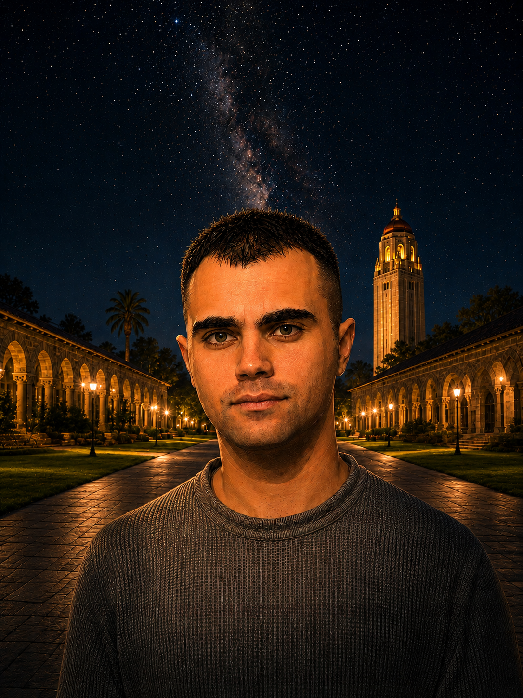

Alexandros E. Tzikas
|
 |
I am a PhD candidate in SISL at Stanford University. I am advised by Mykel Kochenderfer and I also work with Stephen Boyd. During my PhD, I worked as a quantitative researcher at the BlackRock Palo Alto AI Lab, where I was fortunate to collaborate with Emmanuel Candès, Trevor Hastie, Stephen Boyd, and Ronald N. Kahn. I received my Master of Science in Engineering from Stanford University, specializing in optimization and statistics for estimation and control. I completed my undergraduate studies in electrical engineering at the Aristotle University of Thessaloniki, with an emphasis on signal processing, communications, and information theory. |
Research interests
I am generally interested in theory and applications at the intersection of (convex) optimization, statistics, and sequential decision-making under uncertainty. I enjoy building practical methods for problems in quantitative finance, state estimation, and control that are grounded in first principles and theoretical insights.
Contact
alextzik (at) stanford (dot) edu